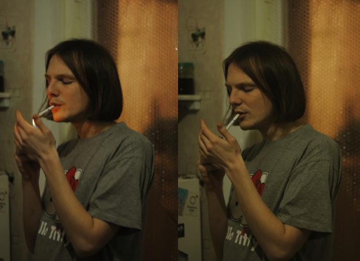
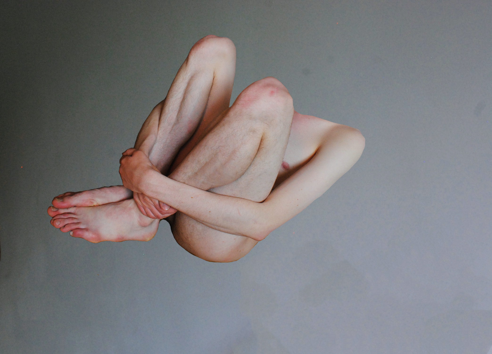
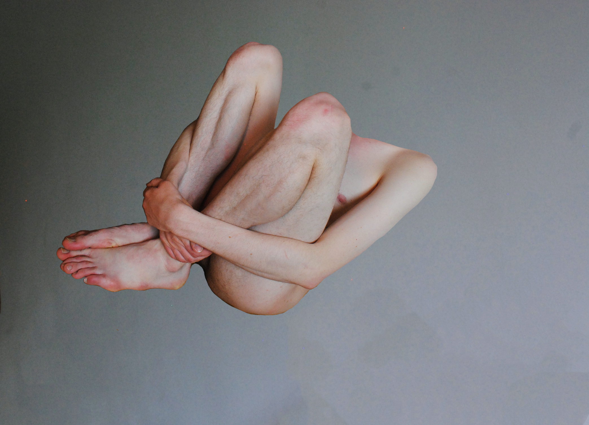

I have been doing art photography since 2016. I've always been interested in people, their faces, their bodies So keep a couple of photos not of me, but of my delicate models.
 

Here you can see my social media
And here you can see my designer CV
A little bit about what I love:
At last you can hear my song here